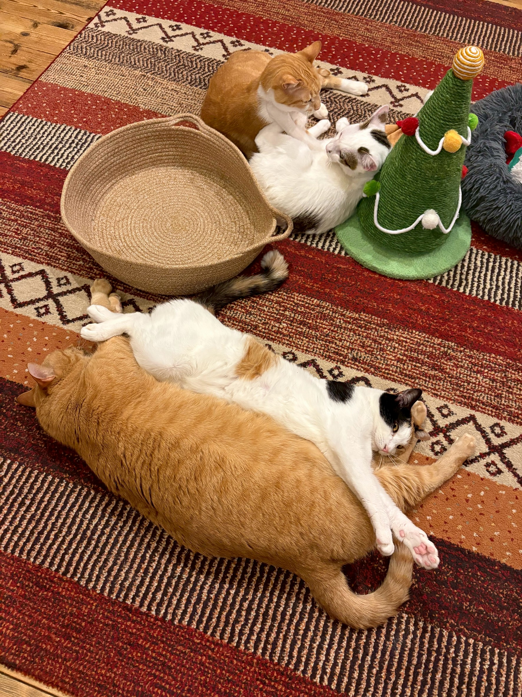

1. 状況の確認
猫の居場所、頭数、健康状態、保護主さまの関わり方を伺います。
Rescue Policy
命を預かる相談だからこそ、状況を伺いながら慎重に判断します。
猫たちが安心して過ごせる環境を守るため、受け入れ頭数や時期には限りがあります。すべてのご相談にお応えできるとは限りませんが、状況を伺ったうえで可能な範囲をご案内します。
医療ケア、隔離期間、在籍猫との相性、預かり体制などを確認し、猫と人の安全を優先します。不明な条件は断定せず、詳細はお問い合わせください。

Consultation Flow
猫の居場所、頭数、健康状態、保護主さまの関わり方を伺います。
動物病院での検査、ワクチン、隔離期間など、必要な準備を確認します。
店内状況と猫の状態を見て判断します。直接受け入れ以外の方法をご案内する場合もあります。
緊急の引き取り施設ではありません。受け入れ条件、費用、時期、医療対応についてはケースごとに異なります。詳細はお問い合わせください。